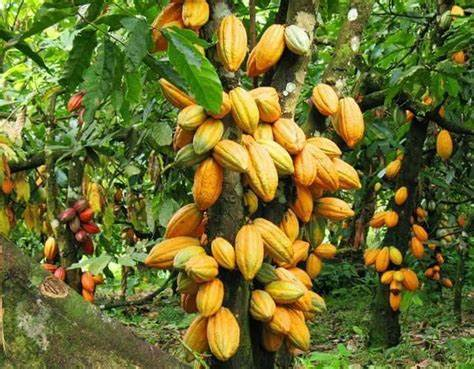

Notre Processus de Fabrication
Chez DARIKA, chaque étape est respectueuse de la nature, de l'humain et du goût. Nous valorisons le travail manuel, local et durable.
üå± Culture durable
Nos plantations sont situées dans la région du centre du Cameroun. Nous cultivons le cacao en agroécologie : sans produits chimiques, avec compost naturel et ombrage raisonné.
✂️ Récolte manuelle & écabossage
Les cabosses sont récoltées à la main à maturité. Ensuite, vient l’écabossage : les fruits sont ouverts un à un pour extraire les fèves, sans abîmer leur structure naturelle.
üçÉ Fermentation & S√©chage
Les fèves sont fermentées dans des caisses en bois pendant 5 à 7 jours. Elles sont ensuite séchées naturellement au soleil sur des claies en bambou. Aucun additif n’est utilisé.
⚙️ Transformation artisanale
Dans notre atelier, les fèves sont torréfiées à basse température, broyées puis transformées à la main en produits finis : poudre, huile, gommage.
üîí Qualit√© & Engagements
Nos produits sont 100% naturels, sans conservateurs ni colorants. Ils sont issus du commerce équitable et traçables de la plantation jusqu’à la vente.